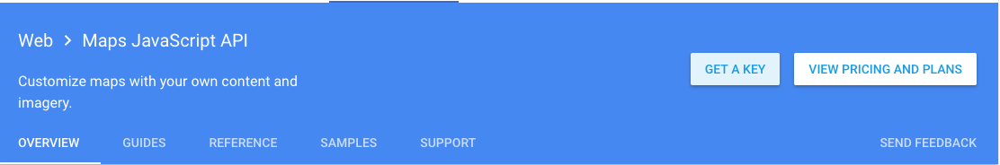

We're going to look at some simple examples using the Google Maps API. There documentation and tutorials are very useful.
We need to start by creating an API key.
Then we can set up a basic HTML page and some CSS for the map.
<body>
<h1>Google Maps</h1>
<div id="map"></div>
</body>#map {
height: 500px;
width: 100%;
}Our JavaScript is pretty simple. We going to use the Google API reference to create a new map and set a the center to a specific location.
function initMap() {
var bmcc = {lat: 40.7180903, lng:-74.0142373};
var map = new google.maps.Map(document.getElementById('map'), {
zoom: 4,
center: bmcc
});
}We can also create a marker at that location.
var marker = new google.maps.Marker({
position: bmcc,
map: map,
title: "BMCC"
});Finally, we can add an event listener to the marker.
marker.addListener("click", function() {
map.setZoom(12);
map.setCenter(marker.getPosition());
});To make this all work, we have to add a specific script provided by Google that we plug our API key into.
<script async defer
src="https://maps.googleapis.com/maps/api/js?key=YOUR_API_KEY&callback=initMap">
</script>Let's also take a look at a click event on the map.
map.addListener('click', function(event) {
console.log(event);
console.log(event.latLng.lat());
console.log(event.latLng.lng());
});